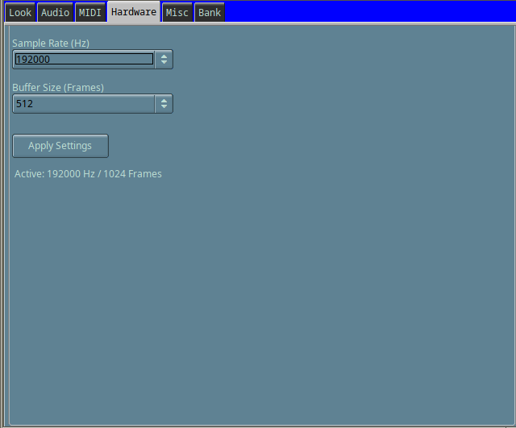
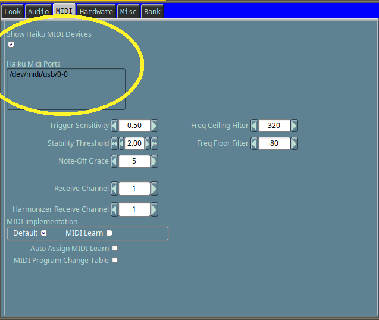
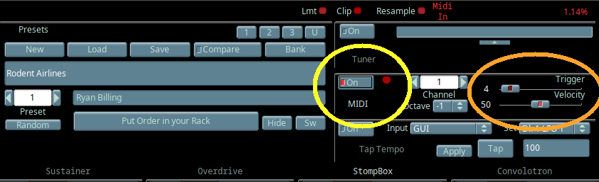
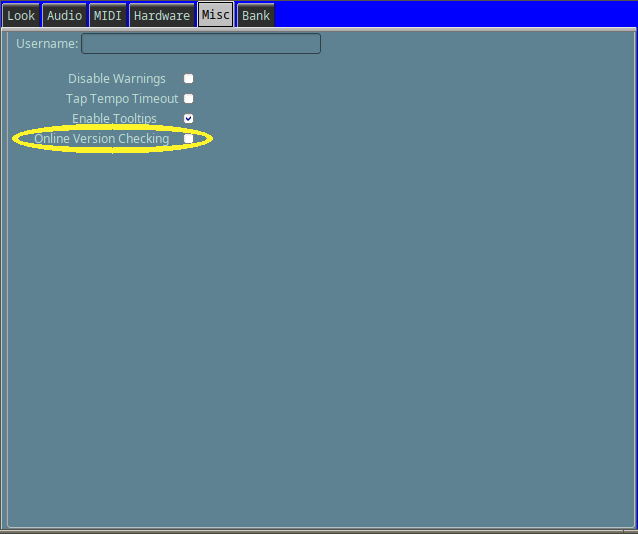

Rakarrack Haiku offers the user the option to set Sample Rate (Hz) and Buffer Size (Frames). These settings work optimally if realtime audio is enabled. To enable realtime audio, you would first check if your audio card has a settings file that is applicable for setting realtime audio, then edit it and put in /boot/home/config/settings/kernel/drivers

You can visit https://github.com/haiku/haiku/tree/master/src/add-ons/kernel/drivers/audio to check if your audio card has an applicable realtime settings file.
To enable realtime audio for an HDA driver, the settings file would look similar to this:
# Settings file for the HDA driver # # This file should be moved to the directory # ~/config/settings/kernel/drivers/ # Uncomment and edit any of the setting lines you wish to set. # The values shown are just the defaults. # Don't uncomment any that you don't need to differ from the default. # Remember that latency will probably be at least # 2*buffer_frames/sample_rate # For real time audio, a buffer of 1024 frames at 192000 # should be good (<15ms). # You will need more buffers if they're small. # e.g.: # play_buffer_frames 1024 # play_buffer_count 4 ########################################################### #play_buffer_frames 512 #play_buffer_count 4 #record_buffer_frames 512 #record_buffer_count 4 # Just uncomment this four lines and restart Media Server # To enable realtime audio #play_buffer_frames 1024 #play_buffer_count 2 #record_buffer_frames 1024 #record_buffer_count 2
Rakarrack Haiku supports MIDI connections. For example, you can run MidiSynth and select Rakarrack-out.
If rakarrack-out does not appear in MidiSynth make sure to check "Show Haiku MIDI Device" and try again.

Once rakarrack-out is checked in MidiSynth then you would enable the MIDI playback in the main rakarrack control board ( yellow circle ).
Trigger should be kept low as seen in the orange circult. Velocity currently does not work.

Rakarrack Haiku MIDI has a few settings that can be adjusted to fine-tune MIDI playback.

Rakarrack Haiku supports Online Version Checking. New updates will show a notification if available. You can toggle this option off in Misc tab menu.
